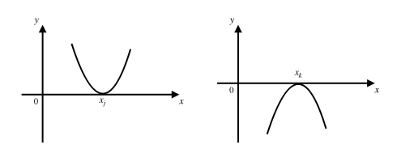
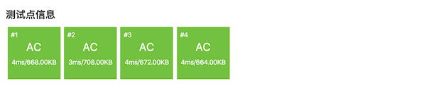

3.4.7. 一元三次方程求解（洛谷P1024）¶
要完成洛谷P1024题“一元三次方程求解”，我们需要灵活应用二分迭代法，利用题目中给出的额外条件设计出合理的迭代过程。另外我们还需要学习一些和多项式有关的预备知识
3.4.7.1. 快速多项式算法¶
一个n阶多项式在数学上的定义为这样一个式子：\(P(x)=a_0+a_1x+a_2x^2+\cdots+a_nx^n\)。现在给定任意实数 \(x\)，要计算这个多项式的值。最简单的蛮力计算法为了计算出每一项 \(a_1x,a_2x^2,\dots,a_nx^n\)，共需要做 \(1+2+\cdots+n\) 次乘法，这显然是 \(O(n^2)\) 时间的。我们现在已经很有经验了，一看就知道这个方法不好，因为重复计算非常的多。
第二种方法可以这样，我们先建立一个长度为n的数组，然后从头到尾分别计算和存放 \(x,x^2,\dots,x^n\) 的值，这个计算过程中后一个值可以用前一个值乘上 \(x\) 来得到（有点类似计算前缀和，或许我们可以给它取个名字叫前缀积），一共需要n-1次乘法，然后再各自乘上自己对应的系数，这样整个计算过程需要进行2n-1次乘法。这就快了许多，但是还不够快！而且增加了空间使用，所以还不是我们真正要学习掌握的最好算法。
那么最好的算法怎么来计算多项式呢？我们先来看具体的例子，再来归纳出一个一般的算法。
零阶多项式，也就是常数多项式 \(P(x)=a_0\)，这个不需要计算。
一阶多项式 \(P(x)=a_0+a_1x\)，这个没法简化。按照常规，先计算 \(a_1x\)，然后加上常数项系数 \(a_0\) 即可，一共需要进行1次乘法。
二阶多项式 \(P(x)=a_0+a_1x+a_2x^2\)，我们可以先在后面两项中提出一个 \(x\)，整理成 \(P(x)=a_0+x(a_1+a_2x)\)。现在我们可以先计算括号中的值 \(P_1=a_1+a_2x\)，这是一个一阶多项式。接下来原式就变成了 \(P(x)=a_0+P_1x\)，这还是一个一阶多项式。通过这种方法，我们用2次乘法就完成了二阶多项式的求值。
同理，三阶多项式也可以分解成3个一阶多项式的求值：
用这个方法，我们可以把任何一个n阶多项式 \(P(x)=a_0+a_1x+a_2x^2+\cdots+a_nx^n\) 分解成n个一阶多项式的求值：
整个计算过程只需要n次乘法，这是目前最快的实数多项式求值算法，可以描述成下面这样的算法框架：
快速多项式求值算法
\(\text{Polynomial}(a_0,a_1,\cdots,a_n,x):\)
\(P\leftarrow a_n\)
\(\text{FOR } i \leftarrow n-1 \text{ TO } 0 \text{ DO}\)
\(P \leftarrow a_i + P\cdot x\)
\(\text{RETURN }P\)
在本节后面的程序代码中我们讲看到用这个算法计算三阶多项式的C++函数。
3.4.7.2. 多项式方程的根：奇穿偶不穿¶
接下来我们要了解多项式方程 \(P(x)=0\) 的根的性质。这部分为高中数学内容，初中阶段属于数学竞赛知识，若看不懂无需强求，可以跳过。如果能有所了解，记住结论就更好了。
设 \(P(x)\) 为任意n阶多项式，根据代数定理，它对应的多项式方程 \(P(x)=0\)，通常称为一元n次方程的，可能有0到n个不同的实数根。也就是说，它可以无解也可以有解，如果有解，它可能只有1个实根，也可能有2个不同的实根，……，最多可以有n个不同的实根，都有可能。
假设我们可以把方程通过多项式因式分解变形成下面这样的形式：
其中 \(1\le k \le n\)，\(x_1,x_2,\dots,x_k\) 是 \(k\) 个互不相等的常数，\(m_1,m_2,\dots,m_k\ge1\) 且满足 \(m_1+m_2+\cdots+m_k=n\)。
这样，这个方程就有 \(k\) 个不同的实根 \(x_1,x_2,\dots,x_k\)。整数 \(m_1,m_2\dots,m_k\) 称为对应的根的重数，根 \(x_i\) 称为方程的一个 \(m_i\) 重根，其中重数为1的根称为单根，重数大于1的称为重根。
例如：方程 \(x^2-4x+3=0\) 有两个根 \(x_1=1\) 和 \(x_2=3\)，这个方程可以变形成 \((x-1)(x-3)=0\)，所以 \(x_1\) 和 \(x_2\) 都是方程的单根。方程 \(x^2-2x+1=0\)，经过整理可以变形为 \((x-1)^2=0\)，它只有一个2重根 \(x_{1,2}=2\)。
再如：方程 \(x^3-6x^2+11x-6=0\) 可以因式分解成 \((x-1)(x-2)(x-3)=0\)，它有三个单根 \(x_1=1,x_2=2,x_3=3\)。方程 \((x-1)^2(x-3)=0\) 有一个单根 \(x_1=3\) 和一个2重根 \(x_{2,3}=1\)。而方程 \((x+2)^3=0\) 则只有一个3重根 \(x_{1,2,3}=-2\)。
补充
事实上，并不是所有多项式都可以因式分解成上面这样完美的形式的，比如 \(x^3+8\) 在实数域内就只能分解成 \((x+2)(x^2-2x+4)\)。
警告
这里牵涉到一个特别容易被误解的概念：重根，即重数大于1的根。在代数学上，一个m重根并不是一个根，而是m个根，只不过这m个根的数值相等！这一基本概念一定要记住，非常重要。
补充之后的补充
有人可能听说过“代数学基本定理”这个东西，代数学这一条特别特别重要的基本定理说：一元n次方程一定恰好有n个根，其中重根按重数计为多个根。
那么无解的方程，比如 \(x^2+2=0\) 怎么算？那些不能完美因式分解的方程又要怎么算？比如刚才提到过，\(x^3+8=0\) 就只能因式分解为 \((x+2)(x^2-2x+4)=0\)，似乎只有一个单根 \(x_1=-2\)。事实上，我们前面一直在描述的都是针对实数根而言的，初中所学的实数并不是数的全部，在实数以外还有虚数，实数和虚数还能组合成复数。代数学基本定理所说的恰有n个根是指一定恰好有n个复数根。
接下来是我们真正要关心的问题：一元n次方程 \(P(x)=0\) 的实根，能不能用二分迭代法求解？
根据前面一节的介绍，一个方程的根能不能使用二分迭代法求解，有“范围”、“连续”、“单调”三个条件。其中求解的取值范围这个条件，一般是作为条件在问题中明确给出的，或是不言而喻的。而多项式函数 \(y=P(x)\) 经过一些高等玄学的证明，也早已知道了在实数域内都是连续的。问题的关键在于单调性条件，严格地说，在包含一个根的某个前后相邻区间内，函数 \(y=P(x)\) 是否单调？这种某个数 \(x_0\) 的前后相邻区间，数学上叫做 \(x_0\) 的邻域，指区间 \([x_0-\delta,x_0+\delta]\)。\(\delta\) 是一个任意的正实数，称为邻域的宽度。很不幸的是，这里确实存在某些根在它的任何邻域里函数 \(y=P(x)\) 都不单调的情况。情况一共有两种：
有些根 \(x_i\)，总能找到一个正数 \(d\)，使得在它的任何宽度小于 \(d\) 的邻域内函数 \(y=P(x)\) 都是单调的。不失一般性，我们假设函数单调递增。那么对于任意正数 \(\delta\)，只要 \(\delta\le d\)，就都满足 \(P(x_i-\delta)\lt P(x_i)=0\) 和 \(P(x_i+\delta)\gt P(x_i)=0\)，所以函数的图像在这个根附近就是“穿 \(x\) 轴而过”的。同时我们知道，只要确定能确定任何一个小于等于 \(d\) 的宽度，就可以把这个宽度的邻域作为求值范围来进行二分迭代求解。
另一种不太友好的情况就是，某些根 \(x_j\)，在其任何一个邻域内函数 \(y=P(x)\) 都不单调，此时函数图像在这个根处和 \(x\) 轴相切，而不是穿过，如下图：
例如 \(y=x^2\) 的图像就在 \(x=0\) 处和 \(x\) 轴相切。这种根就没法用二分迭代法来求解。
那么怎么判断一个根是穿过 \(x\) 轴的那种呢还是与之相切的那种？经过一些现在可以忽略不谈的玄学分析，我们有以下结论：凡是重数为偶数的重根都是和 \(x\) 轴相切的根，单根和重数为奇数的根则都是穿 \(x\) 轴而过的那种根。
提示
这在高中数学里是一个必备知识，有一个很好记的别名，叫做“奇穿偶不穿”。
另外，从上面这个结论我们又可以得到一个重要的推论：如果一元n次方程恰有n个不同的实根，那么所有这些实根在其邻域内多项式函数都是单调的，可以用二分迭代法求解。
接下来，我们就可以开始做题了。
3.4.7.3. 洛谷P1024问题题解¶
题目描述
有形如：\(ax^3+bx^2+cx^1+dx^0=0\) 这样的一个一元三次方程。给出该方程中各项的系数( \(a,b,c,d\) 均为实数)，并约定该方程存在三个不同实根(根的范围在 \(-100\) 至 \(100\) 之间)，且根与根之差的绝对值 \(\ge 1\)。要求由小到大依次在同一行输出这三个实根(根与根之间留有空格)，并精确到小数点后 \(2\) 位。
提示：记方程 \(f(x)=0\)，若存在 \(2\) 个数 \(x_1\lt x_2\) 使得 \(f(x_1) \cdot f(x_2)<0\)，则在 \((x_1,x_2)\) 之间一定有一个根。
输入格式
一行，\(4\) 个实数 \(A,B,C,D\)。
输出格式
一行，\(3\) 个实根，并精确到小数点后 \(2\) 位。
输入输出样例
输入：
1 -5 -4 20
输出：
-2.00 2.00 5.00
题目解析
这是一个典型的二分迭代法求根问题。题目已经明确了要求的是一元三次方程，而且保证了有3个不同的实根。根据前面的预备知识，这三个根都是单根，都是穿 \(x\) 轴的可以二分迭代求解的根。
但是题目没有明确给出每一个根附近的单调邻域，只是给了一个大的范围，三个根都在区间[-100,100]上。可是即然要二分迭代，那么单调的求根范围是必须要有的。经过仔细看题，我们发现有这样一个条件：根与根之差的绝对值 \(\ge 1\)。那么在任何一个长度为1的闭区间里，根的分布一共有四种情况：
如果左端点为一个根，那么唯一有可能右端点还是一个根，这样就在左右端点处各有一个根，共2个根；
左端点或右端点，某一个端点处有一个根；
左右端点都不是根，但是二者的函数值异号，那么在区间内部必有一个根；
左右端点都不是根，且二者的函数值同号，那么整个区间上无根。
这就好办了。我们可以把整个[-100,100]区间划分为200个长度为1的小区间：[-100,-99], [-99,-98], … ,[99,100]，然后从左到右逐一地分析它们的情况，如果有根就求出来并记录下来。整个过程在三个根全部求出的时候就可以结束了。
对于任意一个小区间[m,m+1]，我们进行下面的分析：
如果左端点是一个根，那么记录下这个根，并进入下一轮循环。因为如果左端点为根，那么下一个根至少是本区间右端点，但是本区间右端点可以交给下一个区间作为它的左端点去处理，所以此处可以直接进入下一轮循环。但要注意这里有一个小漏洞，至于是什么小漏洞我们留到程序里再说明，请在看到最后的程序之前自己先思考一下是个什么漏洞。
如果左端点不是根，那么判断右端点。如果右端点是根，记录下之后，将循环跳到下下个区间。因为如果本区间的右端点是根，那么下一个根至少是下一个区间的右端点，也就是下下个区间的左端点，所以可以直接跳过下一个区间而进入下下个区间。
如果两个端点处都不是根，那么按二分迭代法的标准做法，先判断区间内有无根存在（同时可以完成增减性判断），若有根则二分迭代求出来。
好了，下面是就是代码了。对了，你知道前面所说的那个小漏洞是什么了吗？你知道该怎样补上这个漏洞吗？
#include <cstdio>
const double EPS = 1e-6;
const double ACC = 1e-2;
inline bool is_zero(double x) { return x <= EPS && x >= -EPS; }
double poly(double e[], double x);
double solve(double e[], double left, double right, bool inc);
int main()
{
double e[4];
scanf("%lf %lf %lf %lf", &e[3], &e[2], &e[1], &e[0]);
double s[3]; // 三个解
int cnt = 0; // 已经获得的解个数
double left, right, lvalue, rvalue;
bool inc; // 是否递增
// 共有200个长度为1的子区间，分别为[-100,-99], ..., [99,100]
for (int i = -100; i < 100; ++i) {
left = (double)i;
right = (double)(i+1);
lvalue = poly(e, left);
if (is_zero(lvalue)) { // 左端点是一个解
s[cnt++] = left; // 记录解
if (cnt == 3) break; // 已找到3个解，直接退出求解过程
// 若左端点是一个解，那么下一个解至少是右端点
// 但是右端点是下一个区间的左端点，所以可以直接
// 跳转到下一轮循环去，在下一轮循环中会先检查这
// 个点的，本轮循环就不用管了
continue;
}
// 现在已经排除了左端点为解的情况，再来判断右端点
rvalue = poly(e, right);
if (is_zero(rvalue)) { // 右端点是一个解
s[cnt++] = right; // 记录解
if (cnt == 3) break; // 已找到3个解，直接退出求解过程
// 若右端点是一个解，那么下一个可能的解至少是
// 下一个区间的右端点，也是下下个区间的左端点
// 所以可以直接跳过下一个区间，进入下下轮
++i;
continue;
}
// 现在已经排除了两个端点处是解的情况，可以进行本区间有无解了
if (lvalue < 0 && rvalue > 0)
inc = true; // 本区间递增，有一解
else if (lvalue > 0 && rvalue < 0)
inc = false; // 本区间递减，有一解
else
continue; // 左右端点值同号，本区间内无解
// 现在可以确定本区间内有一个根了，调用二分迭代法求根
s[cnt++] = solve(e, left, right, inc);
if (cnt == 3) break;
}
// 上述算法过程在一种特殊条件下会遗漏一个根：
// 如果最后两个根是99.0和100.0，最后一个区间[99,100]会在判断到左端点是
// 一个根后就continue，然后整个算法过程结束，最后一个根100.0会被遗漏。
// 会遗漏最后一个根的唯有这一种情况，被遗漏的根必是100.0
if (cnt == 2) s[2] = 100.0;
printf("%.2lf %.2lf %.2lf\n", s[0], s[1], s[2]);
return 0;
}
/*
* 要计算的多项式可以进行如下变形：
* P(x) = e[0] + e[1] * x + e[2] * x^2 + e[3] * x^3
* = e[0] + x * (e[1] + e[2] * x + e[3] * x^2)
* = e[0] + x * (e[1] + x * (e[2] + e[3] * x))
* 所以，我们可以这样来进行循环计算：
* P_0(x) = e[3]
* P_1(x) = e[2] + P_0(x) * x
* P_2(x) = e[1] + P_1(x) * x
* P_3(x) = e[0] + P_2(x) * x
* 最后得到的 P(x) = P_3(x)，只需要进行3次乘法
* 注意：题目中的参数 a, b, c, d 对应的是 e[3], e[2], e[1], e[0]
*/
double poly(double e[], double x)
{
double p = e[3];
for (int i = 2; i >= 0; --i)
p = x * p + e[i];
return p;
}
// 标准的二分迭代法求根
double solve(double e[], double left, double right, bool inc)
{
double mid, mvalue;
while (right - left > ACC) {
mid = (left + right) / 2.0;
mvalue = poly(e, mid);
if (is_zero(mvalue)) return mid;
if ((mvalue < 0 && inc) || (mvalue > 0 && !inc))
left = mid;
else
right = mid;
}
return (left + right) / 2.0;
}
现在，你看懂这个漏洞是怎么回事了吗？你能不能给出另一种修补的方法呢？有一种一句语句都不需要增加，只是对现有某一句语句进行小小的修改的方法，你能想出来吗？
Anyway，就算不弥补这个小漏洞，洛谷的四个测试点里也没有安排类似 \(x^3-199x^2+9900x=0\) 这样的恶心数据。但是洛谷的测试数据简单并不代表我们不需要追求完美，没有漏洞应该是每一个编程人的终极追求。
最后看看AC截图，我们利用了线性时间的快速多项式求值算法之后，这个程序的运行速度是非常快的。
